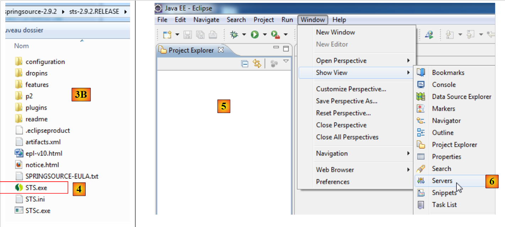
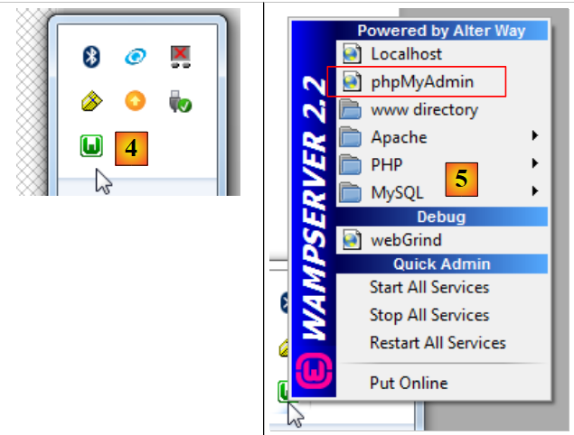
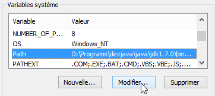
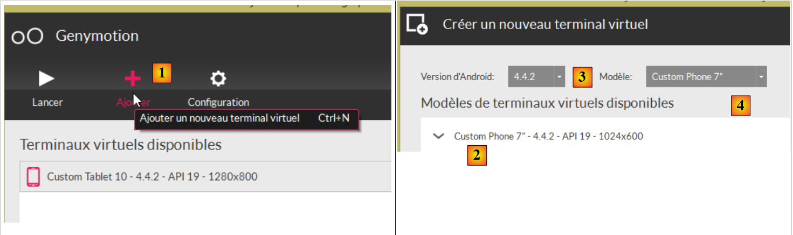

6. المرفقات
نقدم هنا كيفية تثبيت الأدوات المستخدمة في هذا المستند على أجهزة تعمل بنظام ويندوز 7.
6.1. تثبيت STS (Spring Tool Suite)
سنقوم بتثبيت SpringSource Tool Suite [http://www.springsource.com/developer/sts]، وهو إصدار من Eclipse مزود مسبقًا بالعديد من المكونات الإضافية المرتبطة بإطار عمل Spring، بالإضافة إلى إعدادات Maven مثبتة مسبقًا.
 |
- انتقل إلى موقع مجموعة أدوات SpringSource (STS) [1]، لتنزيل الإصدار الحالي من STS [2A] [2B]،
 |
 |
- الملف الذي تم تنزيله هو برنامج تثبيت يقوم بإنشاء شجرة الملفات [3A] و[3B]. في [4]، يتم تشغيل الملف القابل للتنفيذ،
- في [5]، تظهر نافذة العمل الخاصة بـ IDE بعد إغلاق نافذة الترحيب. في [6]، يتم عرض نافذة خوادم التطبيقات،
 |
- في [7]، نافذة الخوادم. يتم تسجيل خادم. وهو خادم VMware متوافق مع Tomcat.
يتم شرح استخدام STS في سياق التطبيق في الفقرة 1.3.2.
6.2. تثبيت [WampServer]
[WampServer] عبارة عن مجموعة برامج للتطوير باستخدام PHP / MySQL / Apache على جهاز يعمل بنظام Windows. وسنستخدمها حصريًّا لـ SGBD و MySQL.
 |
- على موقع [WampServer] [1]، اختر الإصدار المناسب [2]،
- الملف القابل للتنفيذ الذي تم تنزيله هو برنامج تثبيت. تُطلب معلومات متنوعة أثناء عملية التثبيت. هذه المعلومات لا تتعلق بـ MySQL. لذا يمكن تجاهلها. تظهر نافذة [3] في نهاية عملية التثبيت. قم بتشغيل [WampServer]،
 |
- إلى [4]، ويتم تثبيت أيقونة [WampServer] في شريط المهام أسفل يمين الشاشة [4]،
- وعند النقر عليها، تظهر القائمة [5]. وهي تتيح إدارة خادم Apache و SGBD MySQL. لإدارة هذا الخادم، نستخدم الخيار [PhpPmyAdmin]،
- فتظهر لنا النافذة التالية،

لن نقدم سوى القليل من التفاصيل حول استخدام [PhpMyAdmin]. سنوضح في الفقرة 1.3.1 كيفية استخدامه لإنشاء قاعدة بيانات التطبيق.
6.3. تثبيت [Webstorm]
[WebStorm] (WS) هو امتداد لـ IDE من JetBrains لتطوير تطبيقات HTML / CSS / JS. وقد وجدتُه مثاليًّا لتطوير تطبيقات Angular. موقع التنزيل هو [http://www.jetbrains.com/webstorm/download/]. إنه برنامج مدفوع الثمن، لكن يمكن تنزيل نسخة تجريبية صالحة لمدة 30 يومًا. تتوفر نسخة شخصية ونسخة للطلاب بأسعار معقولة.
يتم وصف استخدامه في سياق التطبيق في الفقرة 1.3.3. لتثبيت مكتبات JS داخل التطبيق، يستخدم WS أداة تسمى [bower]. هذه الأداة هي وحدة تابعة لـ [node.js]، وهي مجموعة من المكتبات JS. من ناحية أخرى، يتم البحث عن مكتبات JS على موقع Git، مما يتطلب وجود عميل Git على الجهاز الذي يقوم بالتنزيل.
6.3.1. تثبيت [node.js]
موقع تنزيل [node.js] هو [http://nodejs.org/]. قم بتنزيل برنامج التثبيت ثم قم بتشغيله. لا يوجد شيء آخر يجب القيام به في الوقت الحالي.
6.3.2. تثبيت الأداة [bower]
يمكن تثبيت الأداة [bower]، التي ستسمح بتنزيل مكتبات جافا سكريبت، بعدة طرق. سنقوم بذلك من خلال وحدة الأوامر:
C:\Users\Serge Tahé>npm install -g bower
C:\Users\Serge Tahé\AppData\Roaming\npm\bower -> C:\Users\Serge Tahé\AppData\Roaming\npm\node_modules\bower\bin\bower
bower@1.3.7 C:\Users\Serge Tahé\AppData\Roaming\npm\node_modules\bower
├── stringify-object@0.2.1
├── is-root@0.1.0
├── junk@0.3.0
...
├── insight@0.3.1 (object-assign@0.1.2, async@0.2.10, lodash.debounce@2.4.1, req
uest@2.27.0, configstore@0.2.3, inquirer@0.4.1)
├── mout@0.9.1
└── inquirer@0.5.1 (readline2@0.1.0, mute-stream@0.0.4, through@2.3.4, async@0.8
.0, lodash@2.4.1, cli-color@0.3.2)
- السطر 1: الأمر [node.js] الذي يقوم بتثبيت الوحدة النمطية [bower]. لكي يعمل الأمر، يجب أن يكون الملف القابل للتنفيذ [npm] موجودًا في مجلد PATH على الجهاز (انظر الفقرة التالية)؛
6.3.3. تثبيت [Git]
Git هو نظام لإدارة إصدارات البرامج. توجد نسخة خاصة بنظام ويندوز تسمى [msysgit] وهي متاحة في URL و[http://msysgit.github.io/]. لن نستخدم [msysgit] لإدارة إصدارات تطبيقنا، بل سنستخدمه فقط لتنزيل مكتبات JS الموجودة على مواقع من نوع [https://github.com] التي تتطلب بروتوكولوالمقدم من قبل العميل [msysgit]
يقدم مساعد التثبيت خطوات مختلفة، منها ما يلي:
 |  |
بالنسبة للخطوات الأخرى في عملية التثبيت، يمكنك قبول القيم الافتراضية المقترحة.
بمجرد انتهاء تثبيت Git، تأكد من وجود الملف القابل للتنفيذ في المجلد PATH على جهازك: [Panneau de configuration / Système et sécurité / Système / Paramètres systèmes avancés]:
 |  |
تبدو المتغير PATH كما يلي:
D:\Programs\devjava\java\jdk1.7.0\bin;D:\Programs\ActivePerl\Perl64\site\bin;D:\Programs\ActivePerl\Perl64\bin;D:\Programs\sgbd\OracleXE\app\oracle\product\11.2.0\client;D:\Programs\sgbd\OracleXE\app\oracle\product\11.2.0\client\bin;D:\Programs\sgbd\OracleXE\app\oracle\product\11.2.0\server\bin;...;D:\Programs\javascript\node.js\;D:\Programs\utilitaires\Git\cmd
تأكد من أن:
- أن مسار مجلد تثبيت [node.js] موجود بالفعل (هنا D:\Programs\javascript\node.js)؛
- أن مسار الملف القابل للتنفيذ لعميل Git موجود بالفعل (هنا D:\Programs\utilitaires\Git\cmd)؛
6.3.4. تكوين [Webstorm]
لنتحقق الآن من تكوين [Webstorm]
 |  |
 |
في الأعلى، حدد الخيار [1]. تظهر قائمة الوحدات النمطية [node.js] المثبتة مسبقًا في [2]. يجب ألا تحتوي هذه القائمة إلا على السطر [3] الخاص بالوحدة النمطية [bower] إذا كنت قد اتبعت عملية التثبيت السابقة.
6.4. تثبيت محاكي لنظام Android
المحاكيات المرفقة مع SDK لنظام أندرويد بطيئة، مما يثني المستخدمين عن استخدامها. تقدم شركة [Genymotion] محاكيًا أكثر كفاءة بكثير. وهو متاح على URL [https://cloud.genymotion.com/page/launchpad/download/]
(فبراير 2014).
سيتعين عليك التسجيل للحصول على نسخة للاستخدام الشخصي. قم بتنزيل المنتج [Genymotion] مع الجهاز الافتراضي VirtualBox؛

قم بتثبيت ثم تشغيل [Genymotion]. ثم قم بتنزيل صورة لجهاز لوحي أو هاتف:
 |
- في [1]، أضف جهازًا افتراضيًا؛
- في [2]، اختر جهازًا واحدًا أو أكثر لتثبيته. يمكنك تضييق نطاق القائمة المعروضة عن طريق تحديد إصدار Android المطلوب [3] وكذلك طراز الجهاز [4]؛
 |
- بمجرد انتهاء التنزيل، ستحصل في [5] على قائمة الأجهزة الافتراضية المتاحة لك لاختبار تطبيقات Android الخاصة بك؛
6.5. تثبيت المكون الإضافي لمتصفح Chrome [Advanced Rest Client]
في هذا المستند، نستخدم متصفح Chrome من Google (http://www.google.fr/intl/fr/chrome/browser/). سنضيف إليه الملحق [Advanced Rest Client] . يمكننا القيام بذلك على النحو التالي:
- الذهاب إلى موقع [Google Web store] (https://chrome.google.com/webstore) باستخدام متصفح Chrome؛
- ابحث عن التطبيق [Advanced Rest Client]:
 |
- سيصبح التطبيق متاحًا للتنزيل:
 |
- للحصول عليه، سيتعين عليك إنشاء حساب Google. ثم يطلب [Google Web Store] تأكيدًا [1]:
 |
- في [2]، يصبح الملحق المضاف متاحًا في الخيار [Applications] [3]. يظهر هذا الخيار في كل علامة تبويب جديدة تنشئها (CTRL-T) في المتصفح.